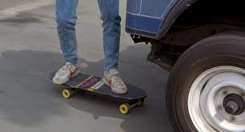
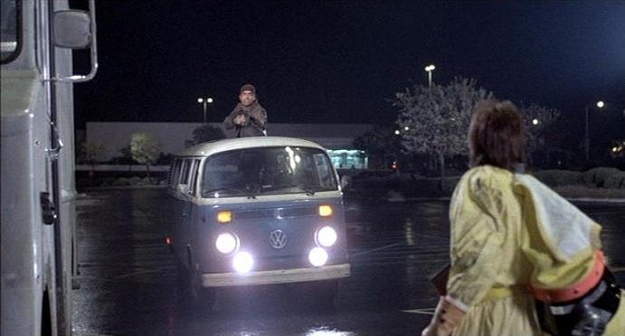
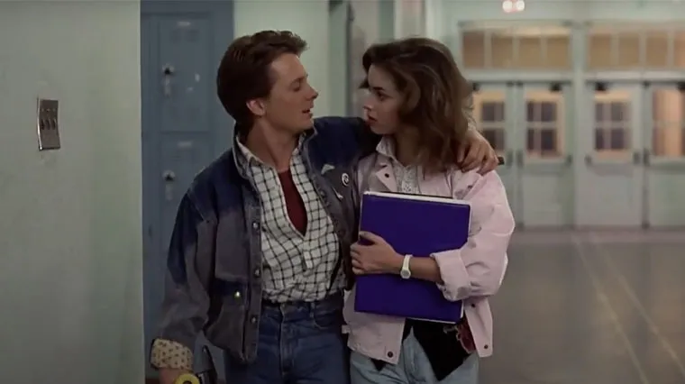
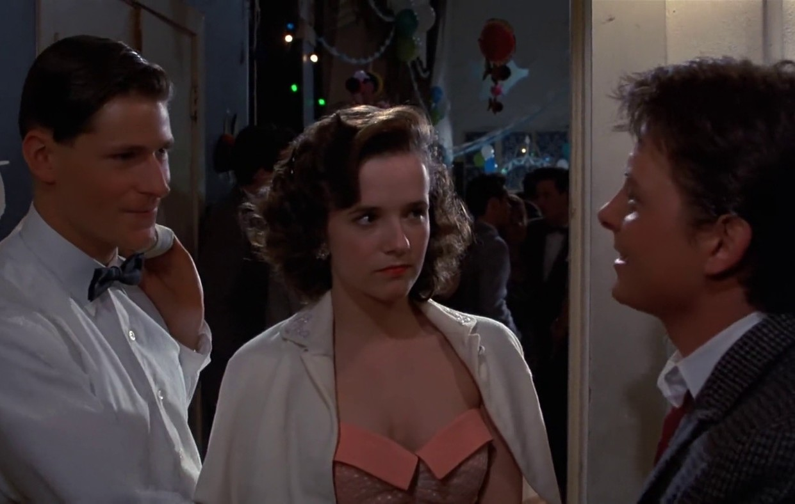
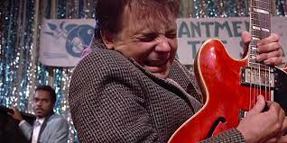
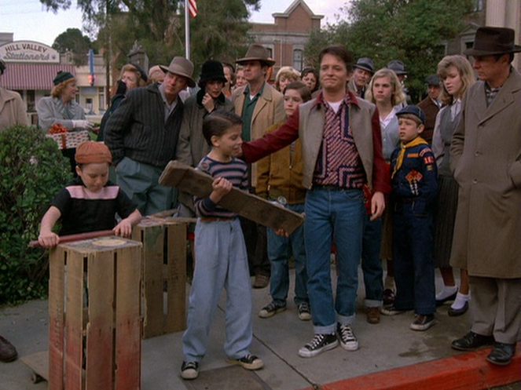

Sur les photos on peux voir que des voitures assez difféérente dans leur style, un skate au bord arrondie , un camescope vhs,des jeunes avec des look decontractées et haut en couleur,un president noir..... tout ses petits détails font que l'on devine année :après 1980.
Voici maintenant un extrait video qui retranscrit l'ambiance de cette année 1985!
on va maintenant analysée la partie ou Marty attérie après sont voyage dans le temps: année 1955
ses photos font equo





Voici maintenant quelques extrait video!